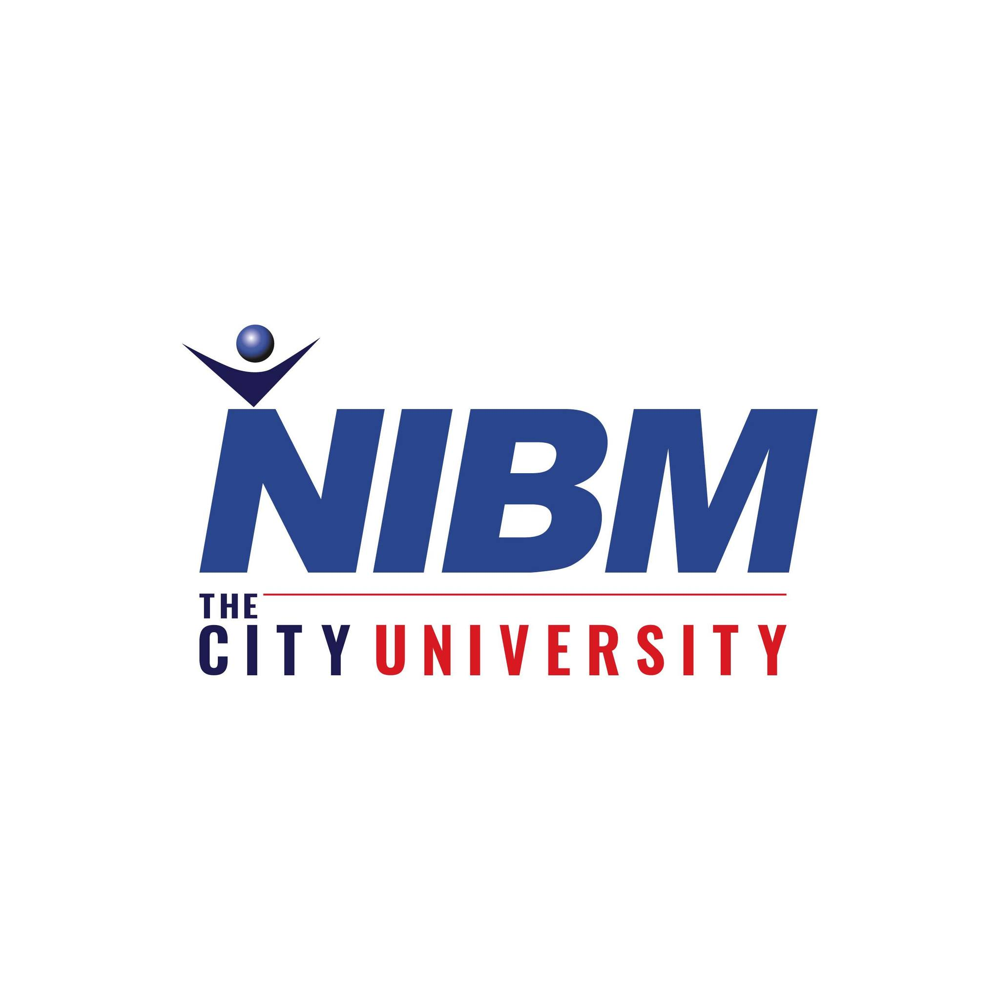
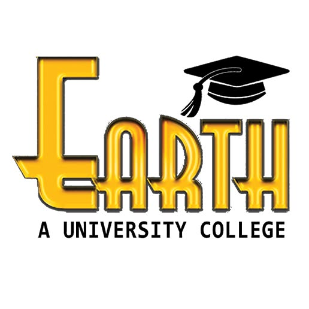

AVAILABLE FOR FREELANCE

UI/UX DESIGNER / FRONTEND LEARNING / TOOL BUILDING
I'm Adheesha Sooriyaarachchi. I build cleaner interfaces, sharper presentations, practical web tools, and portfolio systems that feel current instead of outdated.
Utility projects connected into one cleaner ecosystem.
Years of evolving through freelance visuals and real client work.
Academic growth now sits properly beside the work, not buried inside the page.
This version leans into bento structure, stronger typography, visible card edges, and more intentional contrast. The goal is to make the portfolio feel memorable in the first few seconds.
My preferred direction is clean but not flat, bold but still readable, and modern without turning into generic startup design. Structure comes first. Character comes after.
Layouts and interfaces shaped to communicate faster and look stronger.
Learning by shipping tools, dashboards, and responsive portfolio systems.
Projects should solve something clearly and still feel visually memorable.
Instead of being a weak side-note, this section is treated like a real part of the portfolio. That makes the overall profile feel much more complete.
The strongest academic track behind my current work, supporting software thinking, product understanding, and stronger frontend direction.

Undergraduate pathway focused on computing, systems thinking, and stronger digital capability.
Part of the wider learning journey contributing to structured growth and development.

A learning touchpoint that helped strengthen technical interest and direction.
Supports communication, structure, and broader professional development.

Included as part of the wider academic story and overall study path.
The base level that built discipline, consistency, and long-term ambition.
The experience side is kept direct: what I do, where I do it, and how it connects to the portfolio you are seeing now.

Olympus Educational Academy
Creating academy-facing visuals, layouts, and communication materials with cleaner structure and stronger consistency.
Independent Practice
Producing branded visuals, layout systems, and presentation-led work with a cleaner and more premium final feel.
Continuous Learning
Growing through education, tool creation, and hands-on portfolio experiments that improve both design and implementation.
This area shows the work beyond visuals. Instead of loose links, the tools are grouped and presented like a connected system.
A cleaner parent interface that organizes the utility projects into one more modern portfolio-facing platform.
Fast QR generation for links, text, and quick sharing.
02Clear Sri Lankan NIC information lookup with focused flow.
03Password generation and management with cleaner presentation.
04A more product-like password utility with stronger visual feel.
05Postal code search in a more compact and usable interface.
06Transform text quickly while keeping the UI clean and efficient.
07Designer-friendly color tooling with fast visual feedback.
08Interest calculations presented in a simpler and more modern way.
09The shared surface that ties the whole tool collection together.
These three cards point to the type of work I am actually shaping now: systems, creative support, and the portfolio itself.
A parent platform that organizes a growing suite of utilities into one more credible product experience.
Open projectClient-facing creative support built around clearer communication, stronger visuals, and more consistent presentation.
See experienceThis redesign itself is part of the work: a new style system, stronger hierarchy, and a much better first impression.
Back to topI'm open to freelance design work, visual support, portfolio redesigns, and frontend collaboration.